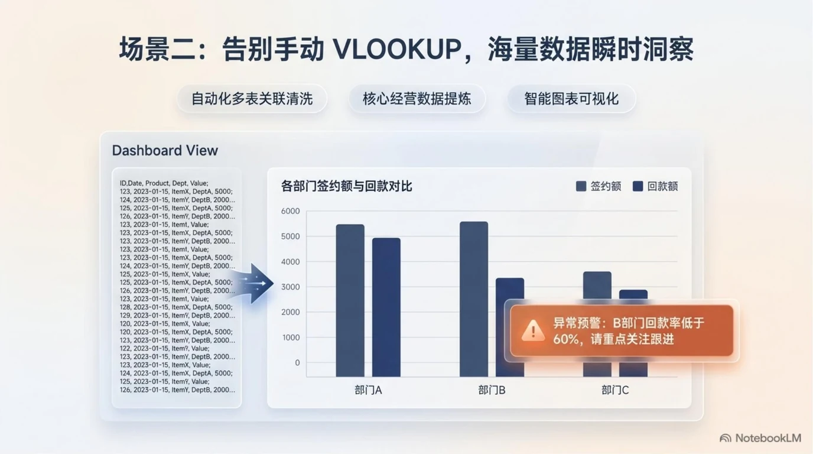

把自然语言变成可运行的代码
Codex 是 OpenAI 推出的云端代码智能体。它不仅能写代码，还能在隔离环境中运行、调试、读取文件并返回结果。本指南面向需要用脚本处理数据、自动化报表或快速验证想法的同事。
云端执行 · 支持 Python/Shell/SQL · 任务级智能体从“代码补全”到“端到端代码任务”
Codex 经历了三代明显变化。今天的版本已经不是一个简单的代码编辑器插件，而是一个能独立完成小型工程任务的云端智能体。
根据上下文预测下一行代码，主要解决“怎么写”的问题，仍需人工运行和调试。
可以解释代码、生成片段、回答技术问题，但代码仍在本地编辑器里，执行环境由用户自己维护。
理解任务目标后，自动规划、写代码、在沙箱中运行、读取输出、修复错误，并交付可下载结果。

不是替代，而是互补
WorkBuddy 更擅长围绕本地工作空间和业务连接器完成办公任务；Codex 更擅长在云端沙箱里写代码、跑数据和验证算法。两者可以组合使用。
| 维度 | WorkBuddy | Codex |
|---|---|---|
| 主要入口 | 桌面客户端，围绕本地工作空间 | 网页或 API，围绕云端沙箱 |
| 最擅长 | 文档处理、飞书协同、PPT/Excel 生成 | 代码编写、数据分析、脚本自动化 |
| 执行环境 | 本地电脑 + 已授权连接器 | OpenAI 云端隔离沙箱 |
| 结果形态 | .xlsx / .pptx / 飞书文档 / 邮件 | .py / .csv / 图表 / 运行日志 |
| 典型用户 | 设计、经营、管理、综合岗位 | 数据、开发、技术管理岗位 |
| 组合用法 | 用 WorkBuddy 整理业务需求与原始数据 → 让 Codex 生成并运行分析脚本 → 结果回 WorkBuddy 生成汇报材料 | |
提示：在窄屏设备上可以左右滑动查看完整表格。
这些工作适合先交给 Codex
选择任务时，优先挑“输入清楚、输出可验证、错误可接受”的数据或代码任务。
场景 01：把多份 Excel 合并成一张干净的表
常见于经营、财务、项目管理：不同部门发来的表格字段名不同、日期格式混乱、有空行空列。Codex 可以写一个 Python 脚本，统一格式后输出一张主表。
场景 02：按规则自动生成周报数据摘要
读取本周任务工时 CSV，按项目汇总人天、计算完成率、识别逾期任务，输出一段 Markdown 摘要和一张汇总表。
场景 03：快速验证一个 API 接口
给 Codex 一份接口文档和测试账号（注意脱敏），让它生成请求脚本、打印响应字段、检查状态码，并把结果整理成表格。
场景 04：从原始数据生成可复用的分析图表
上传原始数据，要求 Codex 做描述性统计、画趋势图或分布图，并把图表和分析结论打包成 HTML/PDF 报告。
四步完成第一个 Codex 任务
不要把整个项目一次性丢给 Codex。先定义清楚输入、输出和验收标准，再逐步扩大任务范围。
安全边界提示
Codex 的云端沙箱会在任务结束后销毁，但上传的文件内容仍可能被记录用于模型改进（视 OpenAI 当前策略而定）。因此：不要上传合同金额、个人信息、密码、Token、内部代码仓库。
三段式提示词，让代码更可控
好的 Codex 提示词和给 WorkBuddy 的提示词结构类似：先交代背景，再明确任务，最后给出验收标准。下面给出三个可直接复用的模板。
模板 A：数据清洗与合并
模板 B：生成统计摘要
模板 C：接口测试脚本
代码任务完成不等于业务可用
Codex 生成的代码可能看起来正确，但运行结果仍需人工核验。以下清单帮助你在正式使用前完成必要检查。
可以继续扩大使用的信号
- 脚本运行无报错，输出格式稳定
- 抽样核对结果一致
- 异常数据有单独日志
- 任务描述可以复用到类似数据
需要暂停并人工介入的信号
- 关键数字与原始表对不上
- 静默丢弃了空值或异常行
- 输出文件无法打开或乱码
- 上传了敏感或授权信息